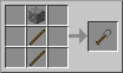

Верстак используется очень просто, но вам нужно знать разные комбинации и ресурсы.
Лопату сделать не составит труда, если у вас есть верстак.
На картинке ниже представлены необходимые "чертежи":
Перейдите по этой ссылке, чтобы посмотреть весь справочник.